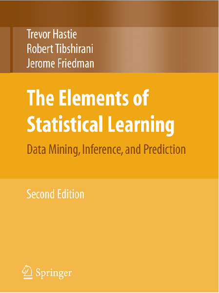
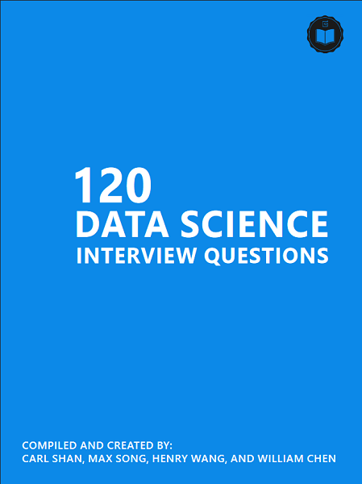

Cours 1
Paris Dauphine PSL : Data Mining/Machine Learning.
Introduction
Présentation du cours et des concepts abordés
Objectifs, contenu, évaluations
Data mining/Machine Learning : Définitions & enjeux
Cours 1
Table des matières.

Qui sommes-nous ?
Samira Bouadi
Head of Data Science & Analytics - BNP Real Estate.
Kevin Vu
Non Performing Loan Investment - Intrum.
Objectifs de cet enseignement
-
01. Théorie
Concepts fondamentaux. Revue exhaustive des différents algorithmes. Compréhension théorique.
-
02. Mise en pratique
Identification des cas d'usages. Gestion globale d'un projet "machine learning". Esprit critique.
Qui êtes-vous ?
-
Vos attentes
Qu'attendez vous de ce cours ? -
Vos connaissances
Qu'est ce que le machine learning pour vous ? -
Programmation
Votre niveau en programmation ?
Pour aller plus loin
-
 The Elements of Statistical Learning
Ouvrage de référence disponible gratuitement en cliquant sur le lien.
-
Machine Learning a probabilistic perspecive
Ouvrage très complet qui aborde certains non traité dans TESL.
-
 120 Data Science interview questions
Pour préparer les entretiens mais aussi vérifier ses connaissances.
Evaluations
Note finale/20 = Quizz effectués + Note moyenne des Quizz + Projet Kaggle/ (2+3+15)
-
Quizz
Quizz de vérification de connaissance de fin de cours. A remplir avant le début du prochain cours.
-
Examen final
Challenge Kaggle adapté pour passer en revue les points importants du cours et travailler la mise en pratique des connaissances.
Quelques definitions
Machine Learning vs Data Mining vs ...
Quelles sont vos définitions ?
-
Statistics
Statisticum collegium: A l'origine, un usage étatique (recensement, économie)
-
Machine Learning
-
Data Mining
Un peu de contexte
Quelques jalons historiques
-
1769: L'automate turc
Un premier questionnement sur le "machine learning".
-
Scepticisme
Une machine est elle capapable de rivaliser avec un être humain ?
-
L'envers du décor
Un décalage entre représentation et machinerie réelle.
Un peu de contexte
Quelques jalons historiques
-
1936: La machine de turing
Une conceptualisation concrète d'une machine abstraite.
-
Instruction parametrique
Programmation de tâche prédéfini.
Un peu de contexte
Quelques jalons historiques
-
1950: Formalisation théorique des réseaux de neurones
L'ambition d'imiter l'intelligence humaine.
-
CNN : Des résultats concrets
Une révolution dans le domaine de la reconnaissance d'images...
-
AI Winter
...qui sera suivie d'une traversée du désert.
Une machine mais pour quel but ?
Les cas les plus courants en entreprises:
-
Recherche théorique
Rendre la machine autonome. améliorer les performances sur des tâches prédéfinies.
-
Mise en pratique
Créations de nouveaux services, augmentation du rendement, réduction de côuts, Marketing
Une première classification
Répartition des différentes tâches:
-
Apprentissage supervisé
Objectif défini à l'avance. Nécessite un échantillon d'apprentissage où l'objectif peut être évalué.
-
Apprentissage non-supervisé
CObjectif générique. En général: discriminer différentes observations selon leurs caractéristiques
Pour quel résultat ?
Supervisé ou non supervisé ?
-
Représentation de mots
E.g: Détection automatique des principales critiques émises sur un site d'avis
Pour quel résultat ?
Supervisé ou non supervisé ?
-
Reconnaissance d'images
E.g: Extraction automatique d'information à partir de documents.